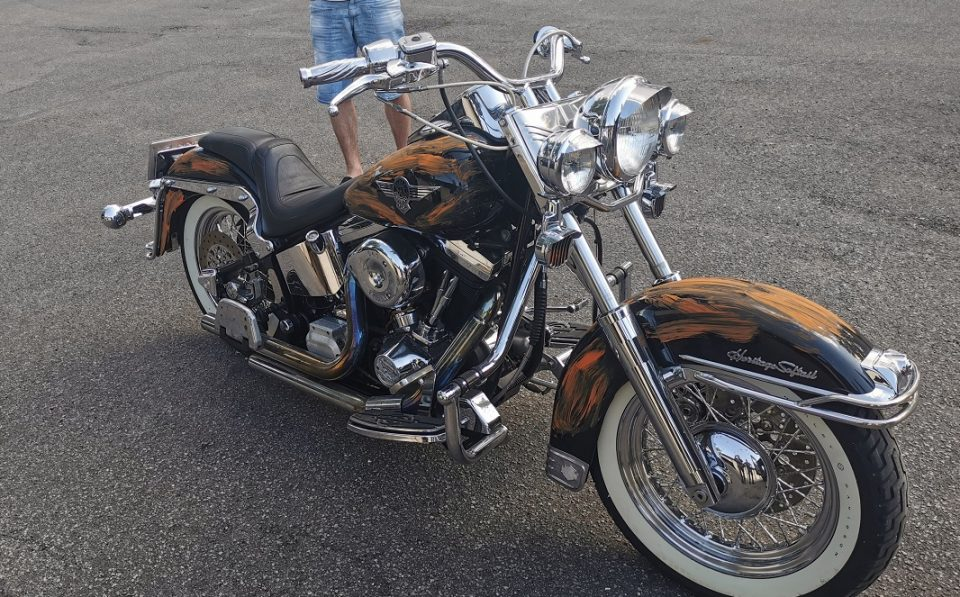

Visos rusiškos detalės | Detava
+370 315 70033 info@detava.lt Paskyra Nuolaidos – Cashback Apmokėjimas Siuntimas Taisyklės Privatumo politika 0 Items Pagrindinis Parduotuvė Apie mus Kontaktai Sena svetainė Select Page Home / Rusiškų motociklų dalys / Visos rusiškos detalės
Visos rusiškos detalės
Rodoma 1–100 iš 509
„Sova“ Variklio tarpinių kompl. su aliumine tarpine
5.50 €Adatinis guolis Iž 14mm
4.00 €Adatinis guolis Jawa švaistiklio 29x23x16
4.00 €Adatinis guolis švaistiklio Minsk, Iž Jupiter
5.00 €Akseleratoriaus trosas Delta 97cm
10.30 €New
Alkūniniai velenai Iž Jupiter (2 vnt.)
90.00 €Alkūninio veleno riebokšlių komplektas Minsk
5.80 €Alkūninis velenas Delta
35.00 €Alyvos filtro žiedas plastmasinis Ural
1.00 €Amortizatoriai Minsk galiniai (komplektas)
48.00 €Amortizatoriau rem. komplektas Ural
6.50 €Amortizatoriaus atmušėjas Ural
2.00 €Amortizatoriaus atmušėjas Ural
2.00 €Amortizatoriaus įvorė apatinė Ural
2.00 €Amortizatorių įvorės Iž (2 vnt.)
4.50 €Amortizatorių įvorės Minsk
16.99 €Angliukai Jawa 12V
5.00 €Angliukai Jawa 6V
6.50 €Antivibracinės gumos Iž Planeta 5 (7 vnt.)
10.00 €Antrinio veleno guolis Iž 192906
8.00 €Antrinis velenas su guoliu Iž
29.00 €Antrinis velenėlis Minsk
35.00 € 28.00 €Apsauga galinio stabdžio traukės Iž
2.50 €Apsauginių lankų tvirtinimai Iž Planeta
15.00 €Apsauginių lankų tvirtinimai Iž universalūs
15.00 €Ašelė galinio stabdžio Iž
6.50 €Ašelė su dantračiais antro bėgio Iž Jupiter
14.00 €Atbulinės pavaros perjungėjas Ural
14.99 €Aukštos įtampos laidas Iž Jawa 260mm
5.00 €Aukštos įtampos laidas Ural Dnepr 550mm
7.00 €Babina Iž 350 12V
14.00 €Babina Iž 350 6V
14.00 €Babina Jawa 12V
14.00 €Babina Jawa 6V
14.00 €Babina Minsk
12.00 €Bako dangtelis Iž
6.00 €Bako dangtelis Iž su rakteliu
7.00 €Bėgių kojelė Minsk
10.00 €Bėgių perjungimo ašelė Iž Planeta
6.00 €Bėgių perjungimo šakutė Iž Planeta 3 (1-3 bėgiai)
9.00 €Bėgių perjungimo šakutė Iž Planeta 3 (2-4 bėgiai)
10.00 €Bėgių perjungimo svirtis Iž Planeta 5
12.50 €Būgninių Kaladėlių kompl. Iž
18.00 €Centrinė laidų pynė Iž Planeta, Jupiter 5
18.00 €Cilindras Java 634 12v D.P.
191.99 €Cilindras Java 634 12v K.P.
191.99 €Cilindras Ural 650cc
103.99 €Cilindras Ural 750cc
207.99 €Cilindro aušinimo mova dešinė Iž Jupiter 6
5.00 €Cilindro aušinimo mova kairė Iž Jupiter 6
5.00 €Cilindro galva Delta
20.00 €Cilindro galvutės guminių tarpinių komplektas Iž Jupiter 6
9.80 €Cilindro komplektas Delta
32.99 €Cilindro komplektas Minsk
55.00 €Daiktadėžės dangtelis Iž (kairės pusės)
15.00 €Daiktadėžės dangtelis IŽ dešinys
15.00 €Dangtelis kuro bako Ural
7.00 €Dangtelis rėmo Iž
2.50 €Dantratis Iž spidometro
8.99 €Dantratis spidometro Iž Z10
6.00 €Dantratis spidometro Java 638 12v
8.99 €Dantratis spidometro Minsk
4.99 €Dantratis tepalo siurblio Dnepr Z40
15.49 €Daviklis ventiliatoriaus Iž
6.00 €New
Degimas elektroninis Iž Planeta 6-12V 1148.3734
58.80 €Degimo kontaktai Iž Jupiter
10.00 €Degimo kontaktai Iž Jupiter (Rusija)
12.00 €Degimo Kontaktai IŽ Planeta 350
7.00 €Degimo kontaktas Iž Jupiter 350
7.00 €Dekompresorius Iž Planeta
9.00 €Delta stūmoklis su žiedais (38.00)
11.99 €Dempferis vairo Iž
15.50 €DNEPR CILINDRO TARPINIŲ KOMPL. 6VNT CILINDRO, GALVUTĖS , KOLEKTORIAUS
4.50 €Dniepr Ural stūmoklio žiedų komplektas (1 rem. 78.20)
13.99 €Dniepr Ural stūmoklio žiedų komplektas (78.00)
8.99 €Duslintuvo alkūnė Iž Planeta 5
26.00 €Ekscentrikas, paskirstytojo krumplys Iž Jupiter
3.50 €Emblemos Iž Jupiter 5 (2 vnt.)
5.00 €Emblemos Iž Jupiter 5 (2 vnt.)
5.50 €Emblemos Iž Planeta 5 (2 vnt.)
5.00 €Faros apsauga Iž Voschod Ural Minsk
4.00 €Filtro guma Dnepr
5.99 €Filtro guma Dnepr
5.00 €Galinė skarda IŽ
20.00 €Galinės žvaigždės ašelė Minsk
10.99 € 9.00 €Galinio amortizatoriaus apsauga plastikinė Iž
2.00 €Galinis žibintas Delta
12.00 €Galinis žibintas Delta
11.99 €Galinis žibintas Dnepr
15.00 €Galinis žibintas Iž
13.99 €Galinis žibintas Minsk
11.99 €Galinių stabdžių svirtis Iž 56. 4-62
6.50 €Galinių stabdžių traukė Iž
11.00 €Gazo trosas Iž
8.00 €Gazo trosas Minsk
8.00 €Gazo trosas Ural Dnepr
8.00 €Gazo troso reguliavimo varžtas M8
2.50 €Generatoriaus angliukai Iž 12V (2 vnt.)
4.00 €New
Generatoriaus apvijos Iž 350 6V
32.00 €Generatoriaus apvijos Minsk
5.00 € 1 2 3 4 5 6Produktų kategorijos
Aksesuarai Akumuliatoriai, klemos Apranga, Šalmai Auto chemija, dažai Auto priežiūros priemonės Autodetalės Dezinfekcinės priemonės Dovanų kortelės su cashback nuolaida Įrankiai Lemputės, papildomos lempos, įvairūs žibintai Motociklų, motorolerių, keturračių dalys Naujienos Priekabų detalės Ratų priedai Rusiškų automobilių dalys Rusiškų motociklų dalys Amortizatoriai, jų dalys DELTA Elektro detalės Grandinės, žvaigždės IŽ (ИЖ) JAWA Kėbulo detalės Kitos detalės Kuro sistema Minsk Muravej Oro filtrai Rankenėlės Riebokšliai, įvorės Spidometro dalys Stabdžių detalės Tarpinės Trosai URAL, DNEPR Variklio detalės Veidrodėliai Visos rusiškos detalės Voschod Tepalai, priedaiPagrindinis Parduotuvė Apie mus Kontaktai Sena svetainė Paskyra Nuolaidos – Cashback Apmokėjimas Siuntimas Taisyklės Privatumo politika
Krepšelis
2020 m. spalio mėn. Pr A T K Pn Š S 1 2 3 4 5 6 7 8 9 10 11 12 13 14 15 16 17 18 19 20 21 22 23 24 25 26 27 28 29 30 31 © 2017 A.Šatrausko firma "Detava" Mūsų svetainė naudoja slapukus. Šie slapukai naudojami statistikos ir rinkodaros tikslais. Jei Jūs sutinkate su šiems tikslams naudojamais slapukai, spauskite "sutinku".Sutinku Daugiau... Privatumo politika Close
Privacy Overview
This website uses cookies to improve your experience while you navigate through the website. Out of these cookies, the cookies that are categorized as necessary are stored on your browser as they are essential for the working of basic functionalities of the website. We also use third-party cookies that help us analyze and understand how you use this website. These cookies will be stored in your browser only with your consent. You also have the option to opt-out of these cookies. But opting out of some of these cookies may have an effect on your browsing experience. Necessary Always EnabledNecessary cookies are absolutely essential for the website to function properly. This category only includes cookies that ensures basic functionalities and security features of the website. These cookies do not store any personal information.
Non-necessary Non-necessaryAny cookies that may not be particularly necessary for the website to function and is used specifically to collect user personal data via analytics, ads, other embedded contents are termed as non-necessary cookies. It is mandatory to procure user consent prior to running these cookies on your website.
